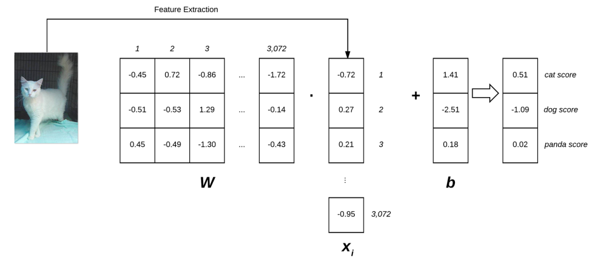

参数化学习¶
参数化简单来说就是对给定模型定义必要参数的过程。
在机器学习中，参数化在定义问题的过程中主要涉及四个部分：data, a scoring function, a loss function, weights and bias。
- Data
Data包含数据点及其对应的labels。通常我们使用多维矩阵来表示数据。其中矩阵的每一行代表一个 data point，每一列代表一个 different feature。
- Scoring Function
f(scoring function)接受输入的数据并返回预测的类别标签。
- Loss Function
损失函数评估预测标签和真实标签在多大程度上接近真实标签(ground-truth labels)。我们训练一个机器学习模型的目标是使损失函数最小化。
- Weights and Biases
基于scoring function 和 loss function，调整权重和偏差的值，以提高分类精度。
线性分类¶
以 Animals dataset 为例，由 \(K = 3\) 个类别共 \(N = 3000\) 张 \(32 \times 32\) (3 通道)的图片组成，每张图片可表示为 \(D = 32 \times 32 \times 3 = 3072\) 个不同的值，定义scoring function f:
\[f(x_{i},W,b) = Wx_{i} + b\]
其中， \(x_{i}\) 表示 \([D \times 1]\) 的列向量(我们将展开成包含3072个整数的列表)，权重 W 为 \([K \times D]\) 的矩阵，偏执 b 的大小为 \([K \times 1]\) 。
import numpy as np import cv2 labels = ["dog", "cat", "panda"] np.random.seed(1) W = np.random.randn(3, 3072) b = np.random.randn(3) orig = cv2.imread("beagle.png") image = cv2.resize(orig, (32, 32)).flatten() scores = W.dot(image) + b for (label, score) in zip(labels, scores): print("[INFO] {}: {:.2f}".format(label, score)) cv2.putText(orig, "Label: {}".format(labels[np.argmax(scores)]),(10, 30), cv2.FONT_HERSHEY_SIMPLEX, 0.9, (0, 255, 0), 2) cv2.imshow("Image", orig) cv2.waitKey(0)
损失函数¶
损失函数对输入数据分类的好坏进行量化。
hinge loss function
错误标签的平均差
\[\begin{split}s = f(x_{i}, W)\\ s_{j} = f(x_{i}, W)_{j}\\ L_{i} = \sum_{j \neq y_{i}}max(0, s_{j} - s_{y_{i}} + 1)\\ L = \frac{1}{N}\sum_{i=1}^{N} L_{i}\end{split}\]注解
\(s_{j}\) 代表第 \(i\) 个输入数据的第 \(j\) 个类别， \(y_{i}\) 代表正确的标签，当给定 \(x_{i}\) 的分类结果 \(L_{i} = 0\) 时，分类正确
squared hinge loss
错误标签的均方差
\[L_{i} = \sum_{j \neq y_{i}}max(0, s_{j} - s_{y_{i}} + 1)^2\]
cross-entropy loss
\[\begin{split}f(x_{i}, W) = Wx_{i}\\ L_{i} = -log(e^{s_{y_{i}}} / \sum_{j} e^{s_{j}})\\ L = \frac{1}{N}\sum_{i=1}^{N} L_{i}\end{split}\]
参数化学习和线性分类的优点¶
训练完模型后，我们只需保留权重和偏置而无需考虑输入
分类新的测试数据速度快